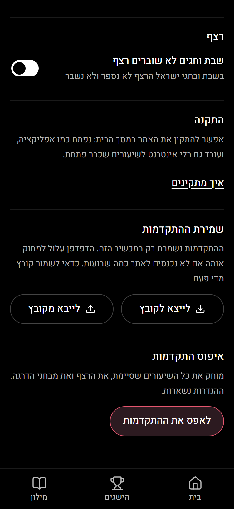

שלב 4 · שמירת ההתקדמות
האתר כבר מעודכן: yudisaiagent-cell.github.io/legato-looks/site
הגדרות: שמירת ההתקדמות
כתוב איפה ההתקדמות נשמרת, ואם הדפדפן הבטיח לא למחוק אותה. "לייצא לקובץ" פותח באייפון את תפריט השיתוף (לשמור בקבצים או לשלוח לעצמך). "לייבא מקובץ" מראה מה יש בקובץ ושואל לפני שהוא מחליף משהו.
